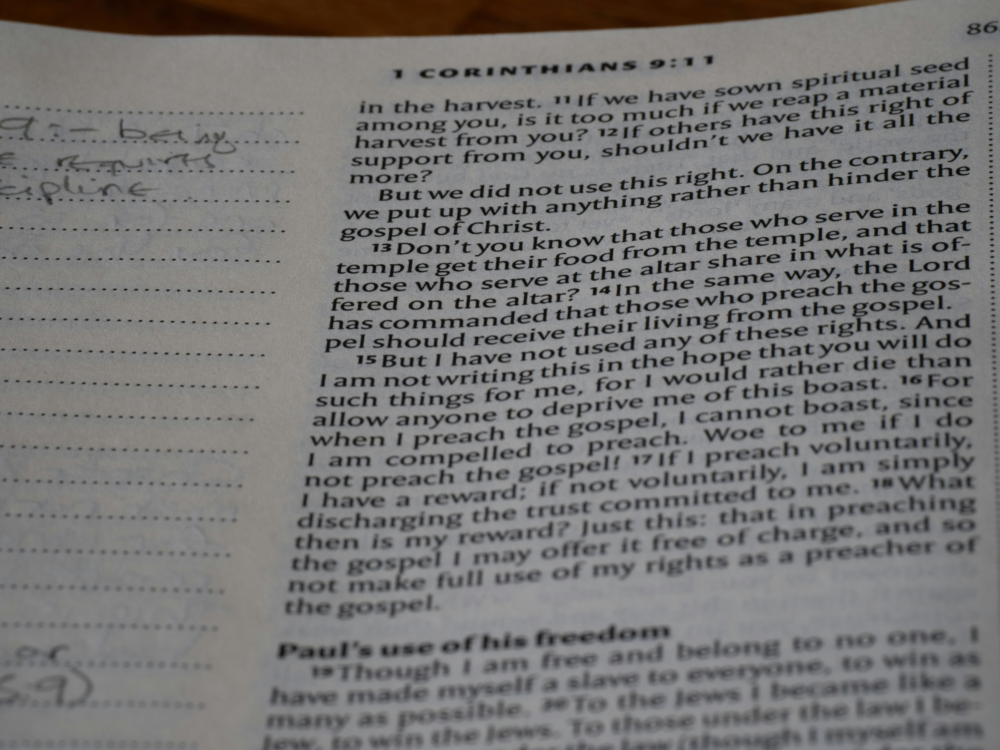

Bonjour, moi c'est Eloise Robert, je suis développeuse web
depuis maintenant 2 ans. Je construit des sites web adaptés
au format mobile, conçus de façon éco-responsable.
Un code optimisé, un design fluide et une empreinte carbone
réduite pour votre futur site internet.
J'accompagne les entreprises et les créateurs dans le
développement de leur présence en ligne avec des solutions
sur mesure, durables et centrées sur l'expérience utilisateur.
De la conception à la mise en ligne, je traduis vos idées en lignes
de code propres pour créer des plateformes épurées et
respectueuse de l'environnement.
On commence quand ?

Développement Mobile
& Responsive

Eco-conception &
Optimisation

Maintenance & Suivi

Site réalisé dans le cadre de ma formation à la Fabrique Numérique.
Caf'Thé est un site e-commerce haut de gamme de vente de thé et de café.

Application web d'accompagnement médical permettant le suivi rigoureux des traitements et des prescriptions, avec sauvegarde locale sécurisée.

Carnet de recette numérique personnalisé avec un outil de customisation de couleurs et un module d'exportation de fiches recettes au format PDF.

Chaque projet commence par une phase d'échange indispensable. Nous étudions ensemble vos objectifs, vos besoins réels afin de concevoir une solution unique.

Le visuel de votre site doit être aussi performant qu'esthétique. Je crée une interface moderne et fluide. En intégrant l'éco-conception dès la phase graphique (choix des polices, gestion des images).

Je traduis les maquettes en lignes de code propres, structurées et optimisées. Une fois le site testé et mis en ligne, je reste à vos côtés : je vous accompagne pour sa prise en main et j'assure le suivi technique pour que votre plateforme reste performante dans le temps.
Vous souhaitez créer un site internet unique, optimiser une plateforme existant ou
intégrer une démarche éco-responsable à votre communication numérique ?
Que votre projet soit déjà bien défini ou encore au stade de l'idée, je suis là pour vous
aiguiller.